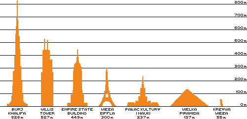

Piramida Cheopsa
Egipska piramida, znajdująca się w Gizie nieopodal Kairu, wzniesiona ok. 2560 r. p.n.e. prawdopodobnie wg projektu Hemona, będąca częścią nekropolii memfickiej, według powszechnie akceptowanej przez środowiska naukowe teorii, stanowiąca w starożytności miejsce pochówku faraona Cheopsa
WYGLĄD WIELKIEJ PIRAMIDY
Piramida Cheopsa jest najstarszym i jedynym dobrze zachowanym cudem świata. Ma 146,6 m wysokości (50 pięter) . Na jej podstawie (230mx230m) można byłoby postawić naraz pięć największych kościołów świata: bazylikę św. Piotra w Rzymie, katedrę św. Pawła, opactwo Westminster w Londynie oraz katedry we Florencji i Mediolanie. Wewnątrz tej budowli znajduje się rozgałęziony system korytarzy. 47-metrowy pasaż i wielka galeria prowadzą do krypty faraona o wymiarach: 10,5m długości, 5,30m szerokości i 5,80m wysokości. W krypcie znajduje się pusty sarkofag. Całość jest wyłożona granitem. Faraon Cheops kazał wybudować piramidę zaraz po śmierci swego ojca Snofru. Jego wszyscy poprzednicy byli pochowani w piramidach.
JAK CHOWANO FARAONA?
Po śmierci faraona balsamowano jego zwłoki i wkładano do krypty. Wnętrzności faraona umieszczano w wazach pogrzebowych. Egipcjanie uważali, że gdy ziemska powłoka faraona znajdowała się w piramidzie to wewnętrzne ka zmarłego opuszczało grobową kryptę. Naukowcy wątpia, że Wielka Piramida była miejscem spoczynku faraona. Są na to trzy dowody: